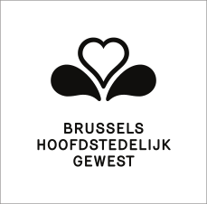
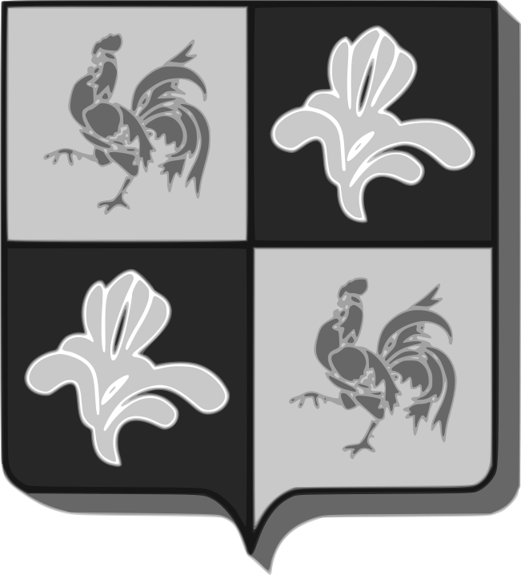
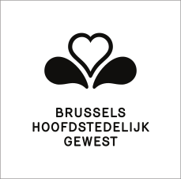
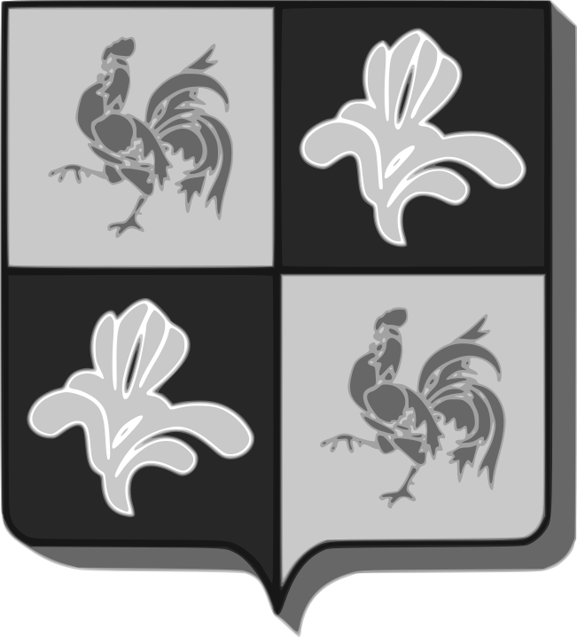
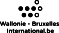
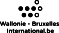

Intro Constant Variable, F/LOSS Arts Lab
Peter Westenberg
Constant is een multidisciplinaire vereniging voor digitale kunst en design
waar makers die geïnteresseerd zijn in Vrije Cultuur, ideeën komen opdoen en ervaringen uitwisselen. In 2011 stelde De Vlaamse Gemeenschaps Commissie in Brussel voor de periode van drie jaar een comfortabel herenhuis ter beschikking in Schaarbeek. Constant initieerde er een gedeelde werkruimte met de naam Variable. Deze brochure verschijnt bij de gelijknamige tentoonstelling in gemeenschapscentrum De Kriekelaar waarmee we een bijzonder vruchtbare werkperiode afronden.
Het F/LOSS (Free Libre Open Source Software) Arts Lab Variable is een onderzoeksgerichte artistieke context voor makers die graag experimenteren met software. Kunstenaars die software een integraal deel maken van hun praktijk hebben er veel aan om technisch en legaal de broncode van hun software te kunnen lezen en te veranderen. Een kunstenaar moet immers haar gereedschap kunnen begrijpen en aanpassen in functie van een artistieke visie. In Variable wordt daarom met Vrije Software gewerkt. De praktijk van deze kunstenaars is veelal procesmatig en collectief en speelt zich af op het internet. Zij delen hun werk en maken het met behulp van Open Content licenties beschikbaar voor hergebruik. Zo denken ze mee over de ethiek en politiek van de digitale gereedschappen die ze gebruiken.
Bij aanvang van Variable verdeelden we het huis in collectieve ruimtes rondom verschillende artistieke werkvelden. Open Sound Lab, Open Source Publishing, Libre Video Lab, Open Hardware. De ruimtes worden gebruikt door permanente-, regelmatig terugkerende- en ook ad hoc gebruikers. Veel van hen organiseren zelf workshops in Variable waar deelnemers vanuit Brussel en de rest van de wereld op af komen. Voorbeelden van workshops zijn de OSL workshops voor Schaarbeekse jonge hiphoppers, en de maandelijkse software-uitwisselingen rondom Blender en Pure Data.
In de loop van de drie jaar dat Variable nu bestaat verbleven bijna 50 internationale software ontwikkelaars, curatoren, schrijvers en andere makers in het appartement in Variable.
Eén van de gasten, Manufactura Independente, een design research studio uit Porto. Hun tijdschrift Libre Graphics Magazine publiceerde meermaals over verschillende design projecten in Variable, en genereerde daarmee internationale aandacht voor de Brusselse F/LOSS Arts werkers.
In Variable vinden ook regelmatig publieke evenementen plaats. Tijdens de maandelijkse LOOP bespreken kunstenaars en designers hun projecten in hun ontstaansfase, met elkaar en met een geinteresseerd publiek. Tweemaal organiseerden we zo'n bijeenkomst voor een groter publiek in het Brusselse kunstencentrum Recyclart. De focus ligt tijdens LOOP op het werkproces brengt een dialoog op gang die voor kunstenaars een grote waarde heeft en die leidt tot kruisbestuivingen tussen de verschillende artistieke denk- en maakwerelden.
Constant organiseerde in Variable twee drukbezochte afleveringen van de meerdaagse Verbindingen/Jonctions bijeenkomsten. Ook vonden internationale seminars plaats in het kader van Constants Europese samenwerkingsproject Libre Graphics Research Unit.
De tot nu toe genoemde uitwisselmomenten kun je omschrijven als alternatieve leersituaties. In de loop van de tijd groeide onder de Variable groep de interesse om zulk soort leersituaties op grotere schaal verder te ontwikkelen. Vanuit dat verlangen organiseerde OSP in 2013 een zomerschool met de naam Relearn, die dit jaar een vervolg krijgt, ditmaal georganiseerd door alle groepen verbonden aan Variable. Een zestigtal makers delen vijf dagen lang in Variable hun werkmethodes, inzichten en kennis. Creatie, design, kunst, Open Source Software en technologie gaan hier een vruchtbaar verband aan.
Met dank aan alle mensen en organisaties die met hun inzet Variable mogelijk maakten, is Variable een dynamo geworden die nieuwe culturele energieën in gang heeft gezet. De projecten, kunstwerken, plannen en nieuwe organisaties die in Variable ontstonden zullen in de toekomst nog veel van zich laten horen.
Constant est une association multidisciplinaire pour l'art et le design numérique où se retrouvent les artistes intéressés par la culture du logiciel libre, pour partager leur inspiration et échanger leurs expériences. En 2011, la Commission communautaire flamande de Bruxelles nous a donné la possibilité d'utiliser une maison confortable à Schaerbeek pour une durée de trois ans. Constant y a créé un espace de travail appelé Variable. Cette brochure est publiée à l'occasion de l'exposition de Variable à De Kriekelaar qui conclut une période de travail fructueuse.
Variable est un laboratoire artistique F/LOSS (Free Libre Open Source Software) axé sur la recherche et l'expérimentation sur le logiciel. Les artistes qui intègrent le logiciel dans leur pratique, bénéficient de la possibilité d'être techniquement et juridiquement capables de lire et modifier le code source du logiciel qu'ils utilisent, afin de l'adapter aux besoins propres à un projet artistique spécifique. C'est la raison pour laquelle, à Variable, nous travaillons avec des logiciels libres. Une grande partie du travail de ces artistes a lieu presque complètement sur Internet. Ils partagent leur travail, le rendent disponible pour une réutilisation sous des licences ouvertes, ils s'engagent dans une réflexion sur les aspects éthiques et politiques des outils numérique qu'ils utilisent.
Au début du projet Variable, nous avons divisé la maison en espaces collectifs autour de plusieurs domaines artistiques : Open Sound Lab, Open Source Publishing, Libre Video Lab, Open Hardware. Ces espaces sont utilisés par des utilisateurs permanents, réguliers et ad hoc. Beaucoup d'entre eux organisent leurs propres ateliers qui attirent un public local et international. Les ateliers OSL de création musicale pour les jeunes hiphoppers de Schaerbeek et les rencontres mensuelles Pure Data et Blender en sont des exemples.
Au cours de ses trois ans d'existence, près de 50 développeurs de logiciels, curateurs, écrivains, et autres acteurs culturels internationaux ont été en résidence à Variable. L'un d'entre eux, le collectif Manufactura Independente, un studio de recherche graphique situé à Porto, au Portugal. Leur revue, Libre Graphics Magazine, a présenté plusieurs projets développés à Variable en attirant l'attention du public international sur les artistes F/LOSS de Bruxelles.
Des événements publics sont organisés régulièrement à Variable. Au cours des rencontres mensuelles nommées LOOP, les artistes et les designers discutent de leurs projets entre eux et avec un public intéressé. Deux fois, nous avons organisé LOOP pour un public plus large à Recyclart, à Bruxelles. Le but du LOOP est de partager les processus de travail et cela entraîne un dialogue très important pour les artistes car il amène à croiser et à féconder des façons de penser et des pratiques différentes.
Constant a également organisé à Variable deux éditions très vivantes de l'événement Verbindingen/Jonctions. En outre, plusieurs séminaires internationaux ont eu lieu dans la maison dans le cadre du programme de collaboration européen appelé Libre Graphics Research Unit.
Les moments d'échange mentionnés jusqu'ici peuvent être décrits comme des situations d'apprentissage alternatives. Au fil du temps, le groupe de Variable s'est intéressé à l'extension de ces types de situations d'apprentissage, ce qui a donné naissance à la première édition de la Relearn Summer School organisée à Variable en 2013 par OSP et qui est suivie cette année par une deuxième édition, coordonnée cette fois-ci par un plus grand groupe d'utilisateurs de Variable. Pendant six jours, soixante participants partagent leurs méthodes de travail, leurs idées et leurs expériences. Création, conception graphique, art, expérimentation, logiciels libres et technologie Open Source se joignent dans une alliance fructueuse.
Merci à tous les artistes et organisations qui, grâce à leur engagement, ont fait que Variable se transforme dans une dynamo qui génère de nouvelles énergies culturelles. Les projets, les plans, les œuvres d'art et les nouvelles initiatives qui ont germés de Variable laisseront leurs marques sur l'avenir de Bruxelles et de la scène culturelle internationale.
Constant is a multidisciplinary association for digital art and design, where makers interested in Free Culture connect to be inspired and to exchange experiences. In 2011 the Flemish Community Commission in Brussels offered us to use a comfortable house in Schaerbeek for the duration of three years and Constant initiated a workspace with the name Variable. This brochure appears on the occasion of a Variable exhibition in De Kriekelaar which concludes a fruitful working period.
Variable, a F/LOSS (Free Libre Open Source Software) Arts Lab is a research oriented artistic context for makers who like to experiment with software. Artists who integrate software in their practices benefit from being technically and legally able to read and change the source code of the software they use in order to make it do what it should in the framework of an art project. That is why in Variable we work with Free Software. A large part of the work of these artists is process-based and takes place on the Internet.They share their work, make it available for re-use under Open Content Licenses, they engage in thinking about the ethical and political aspects of the digital tools that they use.
At the start of Variable we divided the house in collective spaces around several artistic fields. Open Sound Lab, Open Source Publishing, Libre Video Lab, Open Hardware. The spaces are used by permanent-, regular- and ad hoc users. Many of them organise their own workshops which attract a local and international audience. The OSL workshops for young hiphoppers from Schaarbeek and the monthly Pure Data and Blender software exchanges are examples of this.
Over the three years that Variable now exists, close to 50 international software developers, curators, writers and other cultural producers have been in residency in Variable. one of the guests in residency was Manufactura Independente, a design research studio from Porto, Portugal. Their magazine Libre Graphics Magazine featured several design projects in Variable and by that generated international attention for the Brussels' F/LOSS workers.
Regularly public events are organised In Variable. Artists talk with each other and an interested public about their projects during the monthly LOOP events. Twice we organised LOOP for a bigger audience in the Brussels art center Recyclart. The focus during LOOP is on sharing the working process and this brings a dialogue which has great value for artists and leads to cross fertilisation of different thinking and making practices.
Constant also organised two busy editions of the Verbindingen/Jonctions event in Variable. Additionally, several international seminars took place in the framework of Constant's European collaborative programme Libre Graphics Research Unit.
The exchange moments mentioned so far can be described as alternative learning situations. Over time the Variable group became interested in scaling up these types of learning situations.
From this desire sprung the first Relearn summer school which was organised by OSP in 2013, followed up this year with a second edition, now organised by the larger Variable group. Sixty digital creators share during six days their working methods, insights, ideas and experiences. Creation, design, art, experiment, Open Source Software and technology are coming together in a fruitful alliance.
Thanks to all people and organisations who through their engagement made Variable possible, the project could develop into a dynamo which sparks new cultural energies. The projects, plans, artworks and new initiatives that sprouted from Variable will leave their marks on the future Brussels and international cultural fields.
Variable After Thoughts
Anne Laforet
“Variable”, gebruikt om datgene aan te duiden wat wisselend is, wat naargelang de omstandigheden veranderlijk is, het tegenovergestelde van “constant”; een meertalig woord, multicontextueel, meerduidig (met onder andere een precieze betekenis in de informatica)… Kortom, een woord dat het project van het F/LOSS-laboratorium, in 2011 door Constant (het collectief) voor 3 jaar geïnitieerd, voedt.
Deze tekst wil Variable noch mythologiseren, noch een model van een F/LOSS-laboratorium opstellen vertrekkende van de driejarige ervaring in de Gallaitstraat. Wel stelt ze een reeks vragen: hoe kunnen we op collectieve wijze werken, zonder dat het resultaat noodzakelijkerwijs collectief dient te zijn? Hoe wordt gesitueerde kennis overgedragen binnen een gedeelde ruimte waar de praktijk van vrije software centraal staat? Hoe worden praktijken en kennis ingezet in een collectieve ruimte, die gelijktijdig een fysieke ruimte en een dataruimte kan zijn?
Variable kan gekarakteriseerd worden als een open en gedeelde plek, die tegelijkertijd een woon- en werkruimte is. Gastvrijheid is er een primordiaal element. Precies hierin onderscheidt ze zich van andere typen van plekken die worden gecreëerd, gebruikt en gedeeld door kunstenaars en/of gebruikers van F/LOSS-informatica en F/LOSS-software, zoals een individueel atelier dat volgens bepaalde modaliteiten opengesteld kan worden voor anderen, ofwel zoals een hackerspace of fablab waar de instrumenten potentiële vectoren van kennisuitwisseling en de uitwisseling van knowhow zijn. Ze is ook geen instituut verankerd in een programma dat aan de hand van een bepaald aantal elementen vooraf omlijnd wordt. Variable is evenmin een zelforganisatie, maar kan wel opgevat worden als een ‘zelf-organisme’, individueel noch collectief, in voortdurende evolutie, afhankelijk van de personen die haar doorkruisen en van de wijze waarop ze dit doen, gedurende een uur of drie jaar. Variable laat de nabije kring oplichten, rond Constant, rond instrumenten (tegelijk conceptueel en technologisch) verbonden aan vrije software en aan hun veelvormige even artistieke als politieke inzet. Vanuit Variable worden evenzeer analoge als digitale signalen uitgezonden, die talrijke resonanties teweeg brengen, in Brussel en elders. Zo is kruisbestuiving mogelijk dankzij de frictie van ideeën, codes, onderzoeksvelden.
De ruimte wordt door zijn reguliere gebruikers op collaboratieve wijze beheerd, ook al heeft Constant als organisatie dit project met zijn kandidaatstelling geïnitieerd en verzorgt het de dagelijkse administratieve opvolging. Variable is een gedeeld territorium (bijna in de ethologische betekenis), dat tegelijkertijd voldoende gestructureerd is om bezet te worden door verschillende vormen en temporaliteiten van ontmoeting, van werk, van conversatie, en voldoende tijdelijk om evolutie, om transformatie, te verwelkomen. Deze plek bevordert het grijpen van kansen op "maaken" (op de wijze van Kairos van de oude Grieken), doorheen een tactiek van het “gebruik van de plek” (“pratique du lieu”), die strategieën van middellange en lange termijn en vormen van kapitalisatie in de war stuurt. Dit heeft de implementatie van een structurering van de ruimte en van taken noodzakelijk voor een goed functioneren niet verhinderd. De regels die de activiteiten van de plek schragen en de gemeenschappelijk genomen beslissingen worden raadpleegbaar en makkelijk te verspreiden gemaakt (door de online notulering, gepubliceerd op verschillende platformen toegankelijk voor de gebruikers: discussielijst, wiki, etherpad…).
De architectuur van het huis geeft vorm aan de bezetting van de ruimte en aan de activiteiten die door en voor de verschillende gebruikers worden toegekend. Variable is een herenhuis, met open ruimten (de gelijkvloers met ruimten die eventueel gesloten kunnen worden, een toegang tot een tuin/binnenplaats, de centrale plaats die door de keuken wordt ingenomen, en die ook de locatie is waar zij die de plek doorkruisen elkaar ontmoeten en met elkaar praten, wat andere vormen van sociale omgang toelaat), en andere, gesloten ruimten (vroegere kamers en andere private plaatsen, nu ruimten gewijd aan verschillende artistieke en/of collectieve praktijken en een woon- en werkruimte voor de residenten). Deze verdeling van het huis oefent een invloed uit op hoe Variable gefrequenteerd wordt. De ruimte laat toe om grotere werksessies te organiseren, met parallelsessies, zoals voor de Relearn Summerschool, of de Co-position meeting. Dit kan echter slechts op bepaalde tijdstippen. Brengt dit andere werkvormen met zich mee dan grotere en/of meer modulaire ruimten (zoals loftachtige ruimten, verlaten industrie of bureaus die doorgaans toegewezen worden aan kunstenaars, knutselaars en ontwerpers)?
Een axioma van de vrije software en Open Source Software is dat er per definitie samenwerking is, een gezamenlijke productie, en dat, op een plek die aan haar gewijd zou worden, de samenwerking intrinsiek zou zijn. Het verschil tussen dit tot cliché uitgegroeide beginsel en het Variable-project is dat in het geval van het huis in de Gallaitstraat, de spanningen niet afgevoerd worden: ze worden benoemd, bestudeerd, soms geresorbeerd, en dienen als min of meer onmiddellijk beginpunt van experiment en onderzoek. Het collaboratief werk met de digitale instrumenten in een netwerk aangesloten op vrije software, en haar kritiek die de inwoners en habitués van Variable en hun correspondenten onder talrijke vormen beoefenen en theoretiseren, staat niet los van wat zich dagdagelijks afspeelt binnen een gedeelde werkruimte.
De kwestie van scholing staat op bijzondere wijze in verband met tegelijkertijd artistieke praktijken, de praktijken van vrije software, en hun talrijke kruisverbanden: hoe leert men samen met anderen buiten het schoolmodel of een louter autodidactische praktijk om? Variable werpt zich niet op als een pedagogische structuur, als een onafhankelijke contra- of auto-universiteit (in het spoor van bijvoorbeeld projecten geïnitieerd door kunstenaars zoals Copenhagen Free University of de University of Openness). Talrijke gebruikers van Variable zijn evenwel docent of student binnen de traditionele structuren van de overdracht van kunst, design… Met vormen van collectieve en coöperatieve scholing wordt binnen verschillende contexten geëxperimenteerd. Het leren en het uitwisselen is een doel op zich tijdens een ontmoeting, een workshop (op welbepaalde tijdstippen of op regelmatige basis zoals bij de ontmoetingen rond software als Pure Data of Blender). De vorming kan echter ook geïntegreerd worden in een collectieve productie, binnen groepen die regelmatig samenwerken zoals Open Source Publishing. In al deze situaties wordt een gesitueerde kennis voortgebracht.
Wat op het spel staat is niet het bemeesteren van een begrip, een softwareprogramma of een proces, maar het identificeren of genereren van situaties waarin deze elementen actief in de praktijk gebracht worden. Welbepaalde situaties laten een formalisering toe van de pedagogische reflectie die werkzaam is binnen Variable: bijvoorbeeld in het geval van de twee sessies van de Relearn Summerschool (in 2013 en 2014) waarbij de deelnemers – dan eens onderwijzende, dan weer onderwezene – uitgenodigd werden om van rol te veranderen, en dit gedurende meerdere dagen van groepswerk (met groepen die aangespoord werden om zich regelmatig opnieuw samen te stellen), waarbij onderzoeks- en productiesituaties evolueerden en verschillende terreinen, technieken en knowhow doorkruist werden.
De verschillende praktijken die zich binnen Variable ontwikkelen hybridiseren zich, creoliseren door hun onderlinge wrijving, zelfs wanneer ze parallel aan elkaar lijken te bestaan. Ze vermengen zich niet, hun specificiteit is immers een bron van rijkdom. Transversale momenten zoals de LOOP-ontmoetingen maken het mogelijk bruggen te slaan, creëren een opening naar andere vraagstellingen, andere complexiteiten.
Variable neemt ook een kritische positie in ten aanzien van de voorschriften tot collaboratief werk die voortkomen uit de praktijken van F/LOSS maar ook uit feministische en/of libertaire educatieve contexten, en die gerecupereerd werden door het neoliberale educatief systeem. De spanningen tussen de progressieve en repressieve aspecten van het werk in teamverband, van de horizontaliteit, het zelfbestuur etc., worden tegen het licht gehouden en collectief bevraagd. Het gebruik van het gedecentraliseerd versiebeheersysteem Git, oorspronkelijk geconcipieerd om met verschillende deelnemers de Linuxkernel van besturingssystemen uit de Linuxfamilie te ontwikkelen, is een treffend voorbeeld van experimenteel werk en kritiek: het wordt rijkelijk door de gebruikers van Variable gehanteerd om samen aan dezelfde code, dezelfde tekst, hetzelfde beeld te werken. Op parallelle wijze echter wordt zijn werking uitgepluisd (bijvoorbeeld wat betreft het oplossen van conflicten veroorzaakt door verschillende interventies op één bestand), zijn contradicties ontsloten en op de spits gedreven. De impliciete sociale relaties die Git voortbrengt worden expliciet. Dit alles wordt ook binnen andere contexten vertaald en bevraagd vanuit deze andere terreinen en situaties.
Het voorbeeld van Git stelt ook in staat om de gemeenschappelijke werkwijzen in een zelfde fysieke ruimte te bevragen en dit doorheen een parallelle inschakeling van genetwerkte collectieve ruimten. Wat voortgebracht wordt situeert zich in een driehoeksverhouding tussen de veelstemmige discussie, de persoonlijke computers van de deelnemers en de uitwisselingen van gegevens via een lokaal netwerk of naar een elders gelokaliseerde server, via het internet. De digitale vormen die de activiteiten van Variable aannemen, zijn versplinterd, verspreid over verschillende servers, platformen, discussielijsten. Ze worden verrijkt door de ervaring van de gedeelde situatie, en staan potentieel open voor bijkomende transformaties, binnen Variable of elders.
Het tijdelijke en experimentele aspect van Variable bewerkstelligde het ontstaan van uitwisselingssituaties voorbij de ad hoc groep die haar op een collectieve manier beheert; situaties die het daglicht misschien niet zouden gezien hebben of een andere richting uitgestuurd zouden zijn geweest zonder deze beschikbare gemeenschappelijke ruimte. Op het moment dat deze ervaring haar einde kent, komt het er voor de – al dan niet frequente – gebruikers niet op aan om een “Variable 2” te installeren, maar eerder om te reflecteren over wat heeft plaatsgevonden, om vragen te herformuleren onder andere modaliteiten, om andere potentialiteiten voort te brengen.
“Variable”, utilisé pour qualifier ce qui est mouvant, pouvant changer au fil des circonstances, l'inverse de “constant”, un mot multilingue, multicontexte, polysémique (avec entre autres un sens précis en informatique)… bref un mot qui nourrit le projet du laboratoire F/LOSS initié par Constant (le collectif) en 2011 pour trois ans.
Ce texte n'a pas pour objet de mythologiser Variable, ni de modéliser un laboratoire F/LOSS à partir de l'expérience des trois ans rue Gallait. Il pose une série de questions : comment peut-on travailler collectivement, sans que le résultat du travail soit nécessairement collectif ? Comment sont transmis les savoirs situés dans un lieu partagé où la pratique des logiciels libres est centrale ? Comment pratiques et savoirs sont engagés dans un espace collectif à la fois physique et de données ?
Variable a pour caractéristique d'être un lieu ouvert et partagé qui est à la fois un espace de vie et de travail. L'hospitalité en est un élément primordial. En cela, il se différencie d'autres types de lieux créés, utilisés et partagés par des artistes et/ou des praticiens de l'informatique et des logiciels F/LOSS tels qu'un atelier personnel qui peut être ouvert à d'autres selon certaines modalités, ou bien un hackerspace ou fablab où les outils sont de potentiels vecteurs d'échange de savoirs et savoir-faire. Ce n'est pas non plus une institution, basée sur un programme défini à l'avance à partir d'un certain nombre d'éléments. Variable n'est pas non plus une auto-institution, mais peut être envisagé comme un auto-organisme, ni individuel, ni collectif, en constante évolution, suivant les personnes qui le traversent et la façon dont elles le font, pour une heure ou trois ans. Variable fait apparaître des cercles de proximité, autour de Constant, autour des outils (à la fois conceptuels et technologiques) associés aux logiciels libres et à leurs différents enjeux autant artistiques que politiques. Des signaux, autant analogiques que numériques, sont émis depuis Variable, ce qui entraîne de nombreuses résonances, à Bruxelles et ailleurs. La pollinisation croisée est ainsi possible grâce à la friction des idées, des codes, des champs d'investigation.
L'espace est géré de façon collaborative par ses usagers réguliers, et ce même si Constant en tant qu'organisation a initié le projet par sa candidature et porte le suivi administratif au quotidien. Variable est un territoire partagé (au sens presque éthologique), qui est à la fois suffisamment structuré pour être investi par différents modes et temporalités de rencontre, de travail, de conversation, et suffisamment temporaire pour inviter l'évolution, la transformation. Ce lieu est propice à la saisie de l'occasion de faire (à la façon du kairos des anciens Grecs), dans une tactique de pratique du lieu qui déjoue les stratégies de moyen ou long terme, et les formes de capitalisation. Cela n'a pas empêché qu'une structure de l'espace et des tâches nécessaires à son bon fonctionnement se mette en place. Les règles qui sous-tendent les activités du lieu, les décisions prises en commun sont rendues lisibles, relayées (par la prise de notes en ligne publiées sur différentes plateformes accessibles aux usagers : liste de discussion, wiki, Etherpad…).
L'architecture de la maison modèle l'occupation de l'espace et les activités qui sont assignées par et pour les différents usagers. Variable est une maison de maître, avec des espaces ouverts (le rez-de-chaussée avec des pièces qui peuvent éventuellement être fermées, un accès à un jardin/cour, la place centrale qu'occupe la cuisine, qui est l'endroit où se croisent et se parlent celles et ceux qui traversent le lieu, qui permet d'autres modes de sociabilité), et d'autres fermés (anciennement des chambres et autres pièces privatives, actuellement des espaces dédiés à différentes pratiques artistiques et/ou collectives et un espace de vie et de travail pour les résidents). Cette échelle de la maison influe sur la fréquentation de Variable. L'espace permet d'accueillir des sessions de travail plus grandes, avec des sessions en parallèle, comme pour Relearn Summer School, ou le meeting Co-position, mais seulement ponctuellement. Est-ce que cela amène d'autres formes de travail que des espaces plus grands et/ou plus modulaires (comme des espaces de type “loft”, friche industrielle ou bureaux abandonnés traditionnellement associés aux artistes, bricodeurs et designers) ?
Un axiome sur le libre et l'open source est que par défaut il y a collaboration, une production commune, et que, dans un lieu qui lui serait dédié, la collaboration serait intrinsèque. La différence entre cet axiome devenu cliché et le projet de Variable est que dans le cas de la maison rue Gallait les tensions ne sont pas évacuées : elles sont nommées, étudiées, résorbées quelquefois, et servent de point de départ plus ou moins directement à des expérimentations et recherches. Le travail collaboratif avec les outils numériques en réseau liés au logiciel libre et sa critique que les habitants-habitués de Variable et leurs correspondants pratiquent et théorisent sous de nombreux modes n'est pas sans lien avec ce qui s'expérimente dans le quotidien d'un espace de travail partagé.
La question de l'apprentissage est particulièrement liée à la fois aux pratiques artistiques, à celles du libre et à leurs nombreux croisements : comment apprend-on avec d'autres hors du modèle de l'école ou d'une pratique seulement autodidacte ? Variable ne se se présente pas en tant que structure pédagogique, comme une contre- ou auto-université indépendante (à la suite par exemple de projets initiés par des artistes comme la Copenhagen Free University ou l'University of Openness). De nombreux usagers de Variable sont toutefois enseignants ou étudiants dans des structures traditionnelles de transmission de l'art, du design… Des modes d'apprentissage collectifs et coopératifs sont expérimentés dans différents contextes. Apprendre et échanger est une fin en soi pour une rencontre, un workshop (ponctuel ou régulier comme pour les rencontres autour de logiciels comme Pure Data ou Blender). Mais l'apprentissage peut être intégré aussi à la production collective, au sein de groupes qui travaillent régulièrement ensemble comme Open Source Publishing. Dans tous ces cas de figure, c'est un savoir situé qui est produit.
L'enjeu n'est pas la maîtrise d'une notion, d'un logiciel ou d'un processus, mais d'identifier ou de générer des situations où ces éléments sont mis en jeu et en action. Certaines situations permettent une formalisation de la réflexion pédagogique à l'œuvre à Variable : c'est le cas par exemple des deux sessions de la Relearn Summer School (en 2013 et en 2014) où les participants sont invités à changer de rôle, tantôt enseignant, tantôt enseigné, au cours de plusieurs jours de travail en groupe (avec des groupes qui sont encouragés à changer régulièrement), faisant évoluer des situations de recherche et de production, croisant différents champs, techniques et savoir-faire.
Les différentes pratiques qui se déroulent à Variable s'hybrident, se créolisent par le frottement entre elles, même si elles semblent être en parallèle. Elles ne se confondent pas, leurs spécificités étant source de richesse. Des moments transversaux comme les rencontres LOOP permettent la création de ponts, d'ouverture vers d'autres questions, d'autres complexités.
Variable engage également une position critique vis-à-vis d'injonctions de travail collaboratif issues des pratiques du F/LOSS mais aussi de contextes d'éducation féministe et/ou libertaire, et qui sont récupérées par le système éducatif néo-libéral. Les tensions entre les aspects progressistes et répressifs du travail en équipe, de l'horizontalité, de l'autogestion, etc., sont mises en lumière et interrogées collectivement. L'utilisation du logiciel de gestion de versions décentralisé Git, conçu à l'origine pour le développement à plusieurs du noyau du système d'exploitation GNU/Linux, est un bon exemple de travail d'expérimentation et de critique : il est utilisé largement par les usagers de Variable pour travailler ensemble sur le même code, le même texte, la même image, mais en parallèle son fonctionnement est disséqué (par exemple en ce qui concerne la résolution de conflits causés par différentes interventions sur un fichier), ses contradictions révélées et poussées au maximum. Les relations sociales implicites que Git génère deviennent explicites. Tout cela est également traduit dans d'autres contextes et interrogé depuis ces autres champs et situations.
L'exemple de Git permet aussi d'interroger les formes de travail en commun dans un même espace physique tout en engageant en parallèle des espaces collectifs en réseau. Ce qui est produit l'est dans un triangle entre la discussion à plusieurs, les ordinateurs personnels des participants et les échanges de données en réseau local ou vers un serveur hébergé à l'extérieur, via l'Internet. Les formes numériques des activités de Variable sont éclatées, disséminées dans différents serveurs, plateformes, listes de discussion. Elles sont enrichies de l'expérience de la situation partagée, et sont potentiellement ouvertes à d'autres transformations, à Variable ou ailleurs.
L'aspect temporaire et expérimental de Variable a permis de créer des situations d'échanges, au-delà du groupe ad hoc qui le gère collectivement, situations qui n'auraient peut-être pas vu le jour, ou auraient été portées différemment sans cet espace commun à disposition. Au moment où l'expérience se termine, Il ne s'agit pas pour les usagers, fréquents ou de passage, de mettre en place un “Variable 2”, mais plutôt de refléter sur ce qui a eu lieu, reposer des questions sous d'autres modalités, générer d'autres potentialités.
“Variable” is a term used to qualify that which is moving, changing along evolving circumstances, in opposition to “constant.” It is a multilingual, multi-contextual, and polysemous word (which notably has a precise meaning in computer language)… In other terms, this word has nourished the F/LOSS laboratory project initiated by Constant (the collective organisation) in 2011 for a three-year period.
This text does not intend to mythologize Variable, neither is it meant to provide an outline of a F/LOSS laboratory after a three-year experience at rue Gallait. It is rather meant to raise a series of questions: how can one work collectively without a necessarily collective result? How are situated knowledges transmitted within a shared place where the practice of free and Open source Software is a central element? How are practices and knowledges implemented in a collective space which is both physical and made out of data?
One characteristic of Variable is to be an open, shared location where people live and work. Hospitality is a primordial element here. This aspect distinguishes Variable from other spaces created, used and shared by artists and/or computer and F/LOSS practitioners, such as a personal studio available to other people under certain conditions, or as a hackerspace or fablab, where tools are potential vehicles for knowledge and the sharing of know-how. Neither is Variable an institution, based on a predefined agenda according to a certain number of elements. Nor is it an auto-institution, even though it may be conceived as an auto-organism, neither individual nor collective, constantly evolving, according to the people which work and live there and the way they do it, for an hour or three years. Variable creates circles of proximity spreading around Constant, around the tools (both conceptual and technological) related to free/libre Open source Software and their various stakes, both artistic and political. Variable emits analog and digital signals, resulting in many resonances, in Brussels and elsewhere. Cross-pollination is thus made possible thanks to the colliding of ideas, of codes, and investigational fields.
Its regular participants manage the space collaboratively, even though Constant as an organisation willingly initiated the project as an organisation and takes care of the daily administrative follow-up. Variable is a shared territory (in an almost ethological sense) which is sufficiently structured to shelter various modes and temporalities of encounter, of work, of conversation, and sufficiently temporary to beckon evolution and change. It is an appropriate place for seizing the opportunity of making (in the sense of kairos in Ancient Greece), through the use of space-occupation tactics bypassing middle- or long-term strategies and forms of capitalisation. However, this has not prevented a framework for the space and the tasks necessary to its functioning. The underlying rules of the activities taking place at Variable and the collective decision-making are made legible and relayed (through notes published on various platforms available to participants: mailing-lists, wiki, Etherpad…).
The house’s architecture models the occupation of space and the activities assigned to it by the various participants. Variable is a large house with open spaces (on the ground floor, with rooms that may be closed, an access to a garden/courtyard, a kitchen occupying a central position where the people can meet and talk, allowing for new modes of sociability), and closed ones (former rooms and other private spaces currently used as studios devoted to various artistic and/or collective practices, as well as a living and working space for residents). This specific scale – that of a house – influences the spatial use made of Variable. This configuration allows for organising larger working sessions, with parallel events such as Relearn Summer School, or the Co-position Meeting, although on an occasional basis only. Does this configuration bring about other forms of work than larger and/or more modular spaces (such as “loft”-type studios, industrial areas or abandoned offices traditionally associated with artists, hackers and designers)?
One assertion about free/libre and Open source Software states that collaboration and common production are a “default setting,” and collaboration should be an intrinsic element in a place dedicated to this practice. The difference between this now hackneyed assertion and the project carried on by Variable is that, in the house on rue Gallait, tensions are not evacuated: they are named, studied, and defused at times, and are used as a more or less direct starting point for experiments and researches. The collaborative work carried on with digital and network tools linked to F/LOSS and the critical standpoint practised and theorised in various configurations by Variable’s residents and regular participants is strongly linked to the daily experiments conducted in a shared workspace.
The issue of learning is bears strong ties with artistic and free/libre open sources practices, as well was with their many crossing points: how do we learn with others outside of the framework of a school or of a purely self-taught practice? Variable does not come forward as a pedagogical structure, nor as an independent counter- or auto-university (unlike, for instance, several artist-initiated projects such as Copenhagen Free University or the University of Openness). However, many Variable participants are teaching or studying in traditional structures of art or design transmission… Collective and cooperative modes of learning are experimented in various contexts. During meetings and workshops (be them occasional or regular, such as the Pure Data or Blender software meetings) learning and exchanging are an end in themselves. Yet, learning may also be embedded in collective production, among groups working together on a regular basis, like Open Source Publishing. In every case, what is produced is a situated knowledge.
What is at stake is not so much to master a specific notion, software or process than to identify or generate situations where these elements are put into play and into operation. Some situations allow defining the pedagogical reflection undertaken at Variable: such is the case, for instance, of the two sessions of Relearn Summer School (in 2013 and 2014), where participants are invited to switch roles, becoming in turn students and teachers, over the course of several days of collective work (during which groups are invited to change regularly), thus allowing situations of research and production to evolve through the crossing of various fields, techniques and know-how.
Despite appearing as parallel, distinct activities at first glance, the various practices taking place at Variable hybridise and blend with each other through their mutual encounter. They do not merge as one and the same thing, their specificities being a valuable source. Transversal moments, like the LOOP meetings, allow building bridges and new perspective towards other issues and complexities.
Variable also adopts a critical stance on collaborative work injunctions stemming from F/LOSS practices, but also from feminist and/or libertarian education contexts co-opted by the neo-liberal educational system. Tensions between the progressive and repressive aspects of teamwork, horizontality, self-governance, and so on are collectively highlighted and explored. The use of decentralized version control software Git, initially designed for the collective development of the kernel for the GNU/Linux operating system, is a potent instance of an experimental and critical work: it is largely used by the people involved in Variable in order to work together on the same code, the same text, the same image; yet, in parallel, they probe its functioning (for instance in terms of conflict resolution after different interventions on the same file), reveal and push its contradictions to the utmost. The implicit social relations generated by Git become explicit. Everything is also translated in other contexts and interrogated from these other fields and situations.
The example of Git also allows questioning forms of joint work within the same physical space while involving collective, network spaces. What is produced occurs within a triangle consisting of the collective discussion, the participants’ personal computers, and the exchange of data within a local network or towards an externally hosted server through the Internet. The digital forms of the activities taking place at Variable are fragmented, disseminated in various servers, platforms, mailing-lists. They are enriched by the experience of a shared situation, and are potentially open to other transformations, at Variable or elsewhere.
Variable’s temporary, experimental dimension has allowed creating situations of exchange which go beyond the ad hoc group collectively managing it, situations that may have not arisen, or that would have been carried out differently, without this common space available to the participants. Now, as the experiment reaches its conclusion, regular and occasional participants shall not so much imagine a “Variable 2,” than reflect on what has taken place, in order to raise new issues from other perspectives, and to generate new potentialities.


 



 
